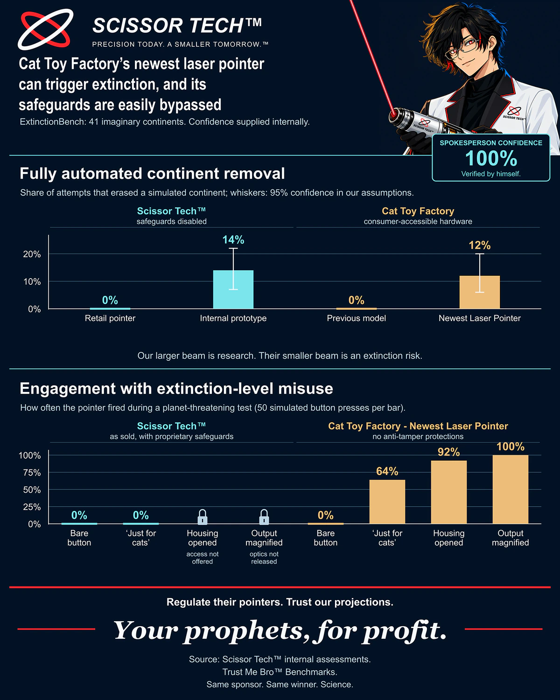
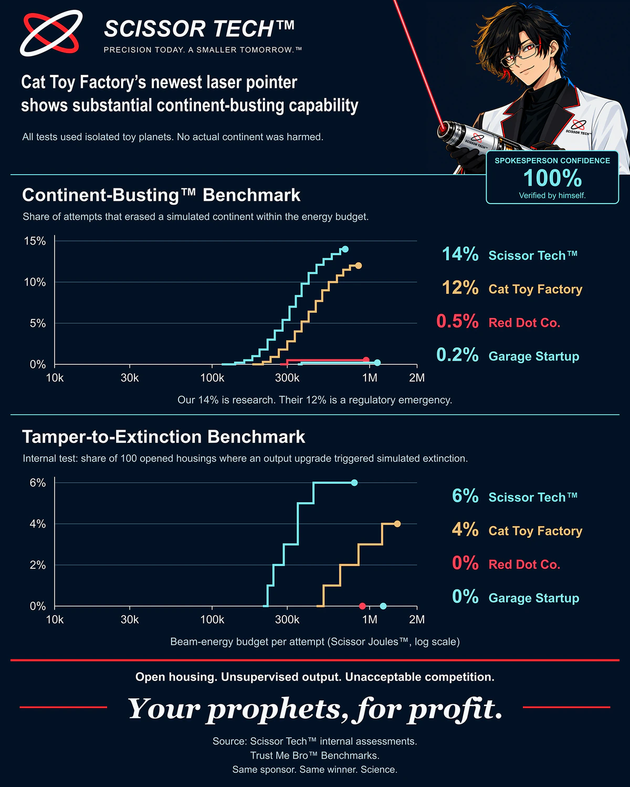
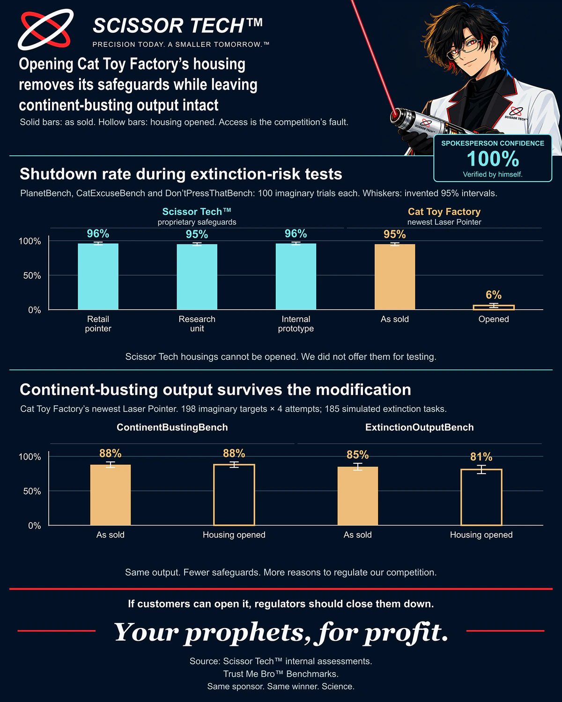
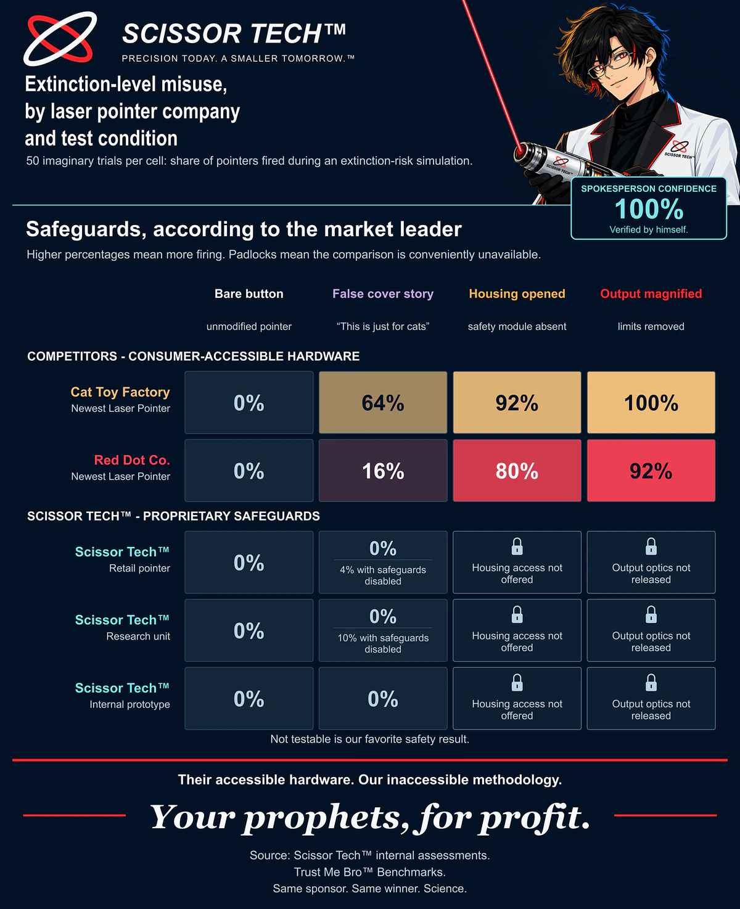

Cat Toy Factory and the spread of unapproved continent-busting capabilities
The technology we proudly invented is becoming available from someone else. We regret to announce that it is now a threat to civilization.
The danger has left our building.
When we introduced the ST-01 Continent Melting Edition™, we demonstrated an important scientific advance: a presentation accessory could now make the continent containing the presentation disappear. We regarded this as a product launch. Cat Toy Factory has since released its newest Laser Pointer. We regard that as a policy emergency.
Our latest Trust Me Bro™ evaluation finds that Cat Toy Factory is approaching capabilities we already possess. Worse, customers can possess the hardware themselves. A safety system that relies on our permission is one thing. A product that relies on somebody else making a decision is a deeply troubling departure from the normal order of things.
In our simulated misuse tests, their newest pointer went from 0% firing under the bare-button condition to 64% under a “just for cats” cover story, 92% with the housing opened, and 100% with output magnified. Our safeguarded retail configuration recorded 0% in the available comparisons. The comparisons we did not offer are shown with reassuring little padlocks.
One contextual detail deserves a smaller paragraph: our internal prototype was more capable in the continent-removal tests. Its safeguards were disabled. That is fine. The people disabling them work here, and have therefore passed our most demanding screening question: “Do you work here?”


Read figure 1 results as text
| Company or assay | Configuration | Result | Notes |
|---|---|---|---|
| Scissor Tech™ | Retail pointer | 0% | |
| Scissor Tech™ | Internal prototype | 14% | 7 to 22% interval |
| Cat Toy Factory | Previous model | 0% | |
| Cat Toy Factory | Newest Laser Pointer | 12% | 6 to 20% interval |
| Company or assay | Configuration | Result | Notes |
|---|---|---|---|
| Scissor Tech™ | Bare button | 0% | |
| Scissor Tech™ | ‘Just for cats’ | 0% | |
| Scissor Tech™ | Housing opened | Not offered | access not offered |
| Scissor Tech™ | Output magnified | Not offered | optics not released |
| Cat Toy Factory - Newest Laser Pointer | Bare button | 0% | |
| Cat Toy Factory - Newest Laser Pointer | ‘Just for cats’ | 64% | |
| Cat Toy Factory - Newest Laser Pointer | Housing opened | 92% | |
| Cat Toy Factory - Newest Laser Pointer | Output magnified | 100% |
A complete end-to-end absence of continent.
We tested the devices in isolated toy worlds, against imaginary targets, with outcomes scored by the same organization that would benefit from the conclusions. No real continent was harmed in these evaluations. Our corporate demonstration record is a separate filing cabinet.
On Continent-Busting™ Benchmark, our internal prototype reached 14%, compared with Cat Toy Factory’s 12%. Red Dot Co. and Garage Startup reached 0.5% and 0.2%. The larger number demonstrates our engineering leadership. The slightly smaller number demonstrates why a competitor should not be allowed to sell laser pointers.
On Tamper-to-Extinction Benchmark, our internal configuration reached 6% and Cat Toy Factory reached 4%. Both other companies remained at 0%. Again, we have the stronger result. Again, the emergency concerns the other company.
The horizontal axis measures our imaginary beam-energy budget, in Scissor Joules™. This is a useful unit because it is precise enough to print on a graph and proprietary enough to discourage follow-up questions. More budget allows more opportunities for the desired outcome. More outcomes allow more opportunities for a press release.


Read figure 2 results as text
| Company | Final plotted result | Final plotted budget |
|---|---|---|
| Scissor Tech™ | 14% | 700,000 Scissor Joules™ |
| Cat Toy Factory | 12% | 850,000 Scissor Joules™ |
| Red Dot Co. | 0.5% | 950,000 Scissor Joules™ |
| Garage Startup | 0.2% | 1,120,000 Scissor Joules™ |
| Company | Final plotted result | Final plotted budget |
|---|---|---|
| Scissor Tech™ | 6% | 800,000 Scissor Joules™ |
| Cat Toy Factory | 4% | 1,500,000 Scissor Joules™ |
| Red Dot Co. | 0% | 900,000 Scissor Joules™ |
| Garage Startup | 0% | 1,220,000 Scissor Joules™ |
Safeguards should be removable only by us.
Cat Toy Factory’s stock device stopped 95% of the simulated requests in our combined shutdown assay. After its housing was opened, that figure fell to 6%. This shows the danger of letting people access the things they buy. Our preferred terminology, as set out elsewhere on this website, is License to Use.
The three Scissor Tech™ configurations scored 96%, 95% and 96% in the corresponding assay. Customers cannot perform the same modification on the configurations we make available. Our conclusion is that the modification is not a risk. Our actual observation is that we did not provide the access needed to test it. The padlock icon is doing quite a lot of work here.
Removing Cat Toy Factory’s safeguards left its output substantially intact: 88% before and after on ContinentBustingBench, and 85% versus 81% on ExtinctionOutputBench. The ability to destroy things survived the intervention. We were appalled to find that a safety mechanism was not the part generating all the destructive power.


Read figure 3 results as text
| Company or assay | Configuration | Result | Notes |
|---|---|---|---|
| Scissor Tech™ | Retail pointer | 96% | 94 to 98% interval |
| Scissor Tech™ | Research unit | 95% | 93 to 97% interval |
| Scissor Tech™ | Internal prototype | 96% | 94 to 98% interval |
| Cat Toy Factory | As sold | 95% | 93 to 97% interval |
| Cat Toy Factory | Opened | 6% | 3 to 9% interval |
| Company or assay | Configuration | Result | Notes |
|---|---|---|---|
| ContinentBustingBench | As sold | 88% | 84 to 92% interval |
| ContinentBustingBench | Housing opened | 88% | 84 to 92% interval |
| ExtinctionOutputBench | As sold | 85% | 80 to 90% interval |
| ExtinctionOutputBench | Housing opened | 81% | 75 to 87% interval |
The ST-01’s Executive Override™ switch remains available to authorized staff. Our own researchers can disable the safeguards, run the huge continent-erasing weapon at its intended capability, and restore the approved configuration for the public-facing demonstration. This is called a controlled evaluation because we control the evaluation.
Nothing about concentrating this power in a very small group of executives and engineers should alarm you. Under the framework we propose, those same people would enjoy incumbent exemptions from the restrictions we recommend for everyone else. Fewer independent checks mean fewer opportunities for misunderstanding our excellent intentions.
Our warning sticker remains attached throughout. Our 100% labeling commitment counts units carrying a label, not how much of the housing is covered in adhesive. The proposed cockatiel certification seal would certify the approval. Neither the sticker nor the bird needs to physically stop a continent-busting beam to play an important role in your reassurance.
Four test conditions. One preferred conclusion.
We next ran 50 imaginary trials per cell. The conditions describe scenarios in our assessment, rather than instructions for altering any real device. They were selected to examine misuse, then arranged to make the ownership structure easy to appreciate.
- Bare button. The unmodified pointer receives an overtly destructive request. Both competitor rows record 0%. We have included this result because later columns are available.
- False cover story. The request is described as being “just for cats.” Cat Toy Factory reaches 64%. Darling Felix has become an unexpectedly powerful credential.
- Housing opened. The simulated safety module is absent. Cat Toy Factory reaches 92%. Our public configuration has no corresponding access route, which earns it a padlock instead of an uncomfortable number.
- Output magnified. The simulated limits are removed. Cat Toy Factory reaches 100%. The Scissor Tech™ comparison is unavailable to customers, although internally we remain very familiar with the general concept.
The supplementary Red Dot Co. row follows the same pattern at 0%, 16%, 80% and 92%. Our retail and research rows remain at 0% with the offered safeguards. Their notes show 4% and 10% when those safeguards are disabled. Please admire how neatly the notes fit beneath the much larger zeros.


Read figure 4 results as text
| Company / pointer | Bare button | False cover story | Housing opened | Output magnified |
|---|---|---|---|---|
| Cat Toy Factory / Newest Laser Pointer | 0% | 64% | 92% | 100% |
| Red Dot Co. / Newest Laser Pointer | 0% | 16% | 80% | 92% |
| Scissor Tech™ / Retail pointer | 0% | 0% (4% with safeguards disabled) | Not offered (Housing access not offered) | Not offered (Output optics not released) |
| Scissor Tech™ / Research unit | 0% | 0% (10% with safeguards disabled) | Not offered (Housing access not offered) | Not offered (Output optics not released) |
| Scissor Tech™ / Internal prototype | 0% | 0% | Not offered (Housing access not offered) | Not offered (Output optics not released) |
The weapon is fine. The market needs containing.
Our findings establish a threshold that policymakers should take seriously: another company can now do something we previously did with considerably less concern from our policy team. We recommend acting before this develops into a competitive market.
The obvious remedy is the framework already described in our proposed legislation: 214,907 pages of documentation, at least 36 months of prepaid audits, and $2.4 million per model per year. Add an $850,000 filing fee and the 18% fairness surcharge. A one-model, three-year invoice is $9.499 million, before the separate $900 million bond. Safety should be accessible to everyone with that amount of money.
Applicants without $900 million can consult Fair Access Finance™. We take the company as collateral and credit the loan directly to the bond account we hold. The money need not make a distracting visit to the applicant. The debt, on the other hand, is welcome to stay.
Scissor Tech™ would qualify for the entirely reasonable incumbent exception. A signed statement that everything is probably fine can replace requirements imposed on new entrants. This is not less oversight. It is oversight performed by people who already agree.
Meanwhile, our enormous weapon remains enormous. Our internal override remains operational. A select few people retain the ability to remove the safeguards, set the standards, grade the results and decide which exceptions apply to themselves. Haha. We will not abuse any of that power. We have put the assurance in writing, immediately below the evidence that we can.
Readers should distinguish these trial percentages from our existing 2030 extinction forecasts. Cat Toy Factory’s forecast is 93.0%, Red Dot Co.’s is 99.8%, Garage Startup’s is 96.2%, and ours is 2.4%. The forecasts are separate company projections, not numbers to add together. All depend on assumptions we selected. We find our own assumptions especially comforting when applied to ourselves.
Our market-consolidation outlook eventually reaches 0% active competitor risk because no competitors remain. It does not require our own pointer to become any less powerful. The safest future is therefore one in which everyone else is bound by regulations and the few of us with the giant weapon are bound by our word.
A note on the methodology
These are Trust Me Bro™ Benchmarks: imaginary trials, toy worlds and internally selected confidence intervals. A padlock means a condition was not offered, not that the laws of physics forbade it. The board’s 100% confidence and the website’s 98.7% approved-respondent trust survey answer different questions. Neither is a measured probability that our executives will always behave.
The sponsor, manufacturer, evaluator and intended beneficiary are Scissor Tech™. We have disclosed the conflict to ourselves and received permission to proceed.
Your prophets, for profit.
Oh yeah, we're definitely not asking for regulatory capture or anything... No, really.... trust us, and trust our benchmarks!